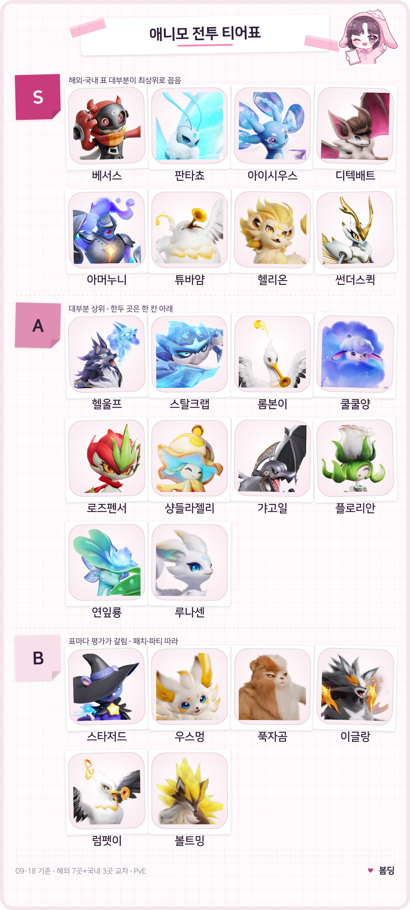

애니모 전투 티어표 정리, 1티어 애니모 추천까지 짚어봤어요
애니모가 9월 16일 수요일에 PC랑 콘솔로 정식 출시했는데요, 오늘로 딱 사흘째예요. 그새 해외 공략 사이트 여러 곳에서 벌써 전투 티어표를 냈더라고요. 지난번에 애니모 포지션별 육성 순서랑 도감 속성치 비교 글을 올렸던 김에, 이번엔 어느 애니모부터 키우면 좋을지 티어로 한 번 정리해볼까 해요.
다만 시작하기 전에 하나만 짚고 갈게요. 출시 사흘 만에 나온 표라 아직 국내 합의된 티어라는 게 없고, 이 정리도 여러 표의 교집합일 뿐 정답은 아니에요. 그 점 감안하시고 참고용으로만 봐주시기 바랍니다.
이 티어표는 대체 어떤 기준으로 만든 걸까요
이 표는 PvE(사냥·던전) 전투 기준으로, 오늘(9월 18일)까지 나온 해외 공략 사이트 7곳과 국내 사이트 3곳을 겹쳐서 정리한 거예요. Game8·Games.gg·AniimoGuide 같은 해외 쪽은 대부분 CBT 때 자료랑 런칭 빌드 자료가 섞여 있고, 국내 쪽도 "아직 사람마다 표가 다 다르다"는 분위기라 완전히 굳은 순위는 아니에요. 다만 해외 표 중 일부는 같은 유튜버(Lex) 영상을 나란히 인용하고 있어서, 완전히 서로 다른 10곳이 독립적으로 같은 결론을 낸 건 아니라는 점도 감안해서 봐주세요.
참고로 대전(PvP) 티어는 이거랑 기준이 완전히 달라서 아래에서 따로 짧게 짚을게요. 지금 정리하는 건 어디까지나 사냥터·던전을 도는 PvE용이에요.
애니모 전투 티어표에서 S티어는 대체 누구일까요
이번 정리로 S티어에 오른 애니모는 베서스·판타쵸·아이시우스·디텍배트·아머누니·튜바얌·헬리온·썬더스퀵, 이렇게 8종이에요. 대부분 표에서 겹쳐서 최상위로 나온 애니모들이라 먼저 키워도 손해 볼 일은 별로 없을 것 같아요.

애니모 전투 티어표 — S·A·B 세 등급으로 정리해봤어요.
티어표 초상: 애니모 공식 위키
| 애니모 | 원소·포지션 | 왜 S티어인가 |
|---|---|---|
| 베서스 | 전기 / 에너지 재생 | 거의 모든 표에서 최상위로 꼽혀요. 공식 위키 스탯으로도 에너지 회복이 118로 표본 중 제일 높고, 원소 안 가리고 범용으로 쓰인다는 평이에요. |
| 판타쵸 | 바람 / 치유 | 전투 필드 밖에서도 파티를 회복시켜주는 능력이 있어서 해외 표에서 나란히 최상위로 올라가 있어요. |
| 아이시우스 | 물·얼음 / 치유 | 천휘(진화) 형태로 가면 국내외 가릴 것 없이 S로 보는데, 기본형만 놓고 보면 한 칸 아래로 잡는 곳도 있어요. HP 120에 마법방어 110, 총합 535로 스탯 자체도 두꺼운 편이에요. |
| 디텍배트 | 바람 / 서포터 | 팀 전체의 바람 피해는 올려주고 상대 바람 저항은 낮춰주는 역할이라 서포터 자리에서 자주 언급돼요. |
| 아머누니 | 어둠 / 격파 | 무력화 스탯이 105로 표본 상위권이고, 상대를 묶어두는 역할로 여러 표에서 두루 인정받는 편이에요. |
| 튜바얌 | 바람 / 격파 | 특성 「승리의 합주」 덕에 실드가 걸려 있을 때 무력화 효율이 크게 오른다고 해요. 바람 조합에서 격파 담당으로 자주 묶여요. |
| 헬리온 | 딜(위키 기준) | 여러 해외 표에서 스타터급 딜러로 소개되는 애니모예요. |
| 썬더스퀵 | 딜(위키 기준) | 국내 표에서 유독 평가가 높은데, 해외 표에서는 아직 이름 매칭이 안 된 상태라 국내 쪽 근거가 더 큰 편이에요. |
A티어 애니모 10종은 이런 느낌이에요
A티어는 대부분 상위권이긴 한데 표 한두 곳에서는 한 칸 아래로 보는 애니모들이에요. 포지션별로 묶어서 짚어볼게요.
- 헬울프(불·어둠/격파) — 국내 표에서 무력화 담당으로 인정받는 애니모예요. 무력화 스탯이 108로 표본 중 제일 높고, 해외 위키에도 'Inferlupa'라는 이름으로 매칭돼 있는데 Game8 쪽에서는 오히려 S로 볼 만큼 평가가 갈려요. 이번 표에서는 여러 곳을 종합해서 A로 뒀어요.
- 스탈크랩(얼음/격파) — 해외 표에서 꾸준히 A로 나오는 격파형이에요.
- 갸고일(바람/격파) — 맞을수록 격파 효율이 오르는 반격형이라, 맷집 있는 파티에 잘 어울려요.
- 롬본이(바람/서포터) — 서포터 자리에서 자주 언급되는데, PvP 쪽 표에서는 한 단계 더 높게 보기도 해요.
- 쿨쿨양(어둠/서포터) — 서포터 라인에서 꾸준히 상위권에 들어요.
- 샹들라젤리(전기/서포터) — 국내외 조회수 순위에서도 상위권에 들 만큼 관심이 높은 편이에요.
- 플로리안(풀/서포터) — 국내 표에서도 좋게 보는데, 해외 위키에도 'Melloblum'으로 매칭돼 있고 Game8 A티어에도 올라 있어서 국내외 평가 방향이 같아요.
- 로즈펜서(공식 위키에는 아직 '콕콕바라'로 나오는데, 인게임 표시명은 '로즈펜서'예요 / 풀·딜, 특성 「검무」) — 여러 표에서 나란히 A로 꼽혀요.
- 연잎룡(풀·물/에너지 재생) — 에너지 재생 포지션에서 베서스 다음으로 자주 언급돼요.
- 루나센(특수, 서포터 평가는 커뮤니티 의견) — 국내에서는 서포터로도 잘 쓴다는 평이 있는데, 해외 표의 비슷한 이름 개체를 그대로 옮기지 않고 한 칸 낮춰 A로 잡았어요. 공식 매칭이 아직 확인이 안 됐거든요.
B티어, 평가가 갈리는 애니모들은요
B티어는 강하지 않다는 뜻이 아니라, 표마다 순위가 크게 엇갈린다는 뜻이에요. 왜 갈리는지 하나씩 볼게요.
- 스타저드(어둠/딜) — 일부 해외 표는 최상위로 보는데, 다른 표들은 "1.0.0.7 빌드에서 스탯이 재조정됐다"고 적으면서 한 단계 낮춰 잡아요.
- 우스멍(전기/딜) — 마찬가지로 최상위로 보는 표랑 중위권으로 보는 표가 갈려요.
- 푹자곰(땅/딜) — 표에 따라 한두 단계씩 차이가 나는 편이에요.
- 이글랑(불/딜, 궁극기 「메테오스트라이크」) — 국내에서는 높게 보는데, 해외에서는 "종결 딜러로 보기엔 애매하다"는 의견도 있어요.
- 럼펫이(바람/딜, 궁극기 「갈매기합주」) — 바람 조합에서는 메인딜로 쓰인다는 이야기가 있는가 하면, 다른 표에서는 한 단계 아래로 봐요.
- 볼트밍(전기/격파, 특성 「전력 지속」) — 천휘(진화) 형태로 가면 평가가 확 올라가는데, 기본형만 놓고 보면 낮게 매기는 표도 있어서 편차가 커요. 천휘라고 무조건 세지는 게 아니라 일부 개체에 속성이나 스킬이 붙는 방식이다 보니, 볼트밍은 그 영향을 크게 받은 케이스라고 보시면 될 것 같아요.
포지션별로는 뭐부터 챙기면 좋을까요
파티 짜실 때는 포지션 하나씩 채우는 게 제일 빠른 방법이에요. 아래 표부터 보시면 돼요.
| 포지션 | 한 줄 추천 |
|---|---|
| 딜 | 헬리온이나 썬더스퀵처럼 S로 꼽히는 딜러부터, 로즈펜서(콕콕바라)도 무난해요. |
| 격파 | 아머누니나 튜바얌을 축으로 잡고, 헬울프·갸고일로 보강하면 돼요. |
| 치유 | 판타쵸나 아이시우스 중 하나만 있어도 충분해요. |
| 서포터 | 디텍배트를 기본으로, 롬본이·쿨쿨양·샹들라젤리 중 취향껏 하나 더요. |
| 에너지 재생 | 베서스가 사실상 독보적이고, 연잎룡도 대안이 돼요. |
해외 표들이 공통으로 말하는 기본 파티 틀은 딜 / 격파 / 치유(또는 서포터) / 에너지 재생, 이렇게 네 자리를 한 마리씩 채우는 거예요. 예를 들어 헬리온(딜) + 아머누니(격파) + 판타쵸(치유) + 베서스(에너지 재생)처럼 짜면 처음 시작으로 무난한 편이에요.
이번 표에서 뺀 애니모들, 왜 뺐을까요
이번 표에는 일부러 안 넣은 애니모들도 있어요. 이유를 정직하게 밝혀둘게요.
- 전설·특수 획득 개체 — 아이리스테일처럼 국내 표에서 최상위로 꼽히는 애니모도 있는데, 공식 위키에 아직 개체 페이지가 없어서 이번 표에는 넣지 않았어요.
- 해외 상위권 중 매핑 미확인 개체 — 해외 표 상위권에 이름이 올라와 있어도 한국어 공식 명칭이 아직 확인 안 된 애니모들은 뺐어요.
- PvP 기준 — 이 표는 전부 PvE 기준이에요. 대전(PvP)은 기본 스탯만으로 순위를 매기다 보니 결과가 아예 다르게 나오거든요. 예를 들어 롬본이는 PvP 표에서 이 표보다 더 높게 보기도 해요.
자주 묻는 질문
Q. 애니모 티어표, 왜 사이트마다 순위가 달라요?
정식 출시(9월 16일)한 지 사흘밖에 안 지나서 그래요. 표마다 CBT 때 자료를 쓰는 곳도 있고 런칭 빌드로 다시 잰 곳도 있어서 기준 시점 자체가 다르거든요. 메타가 좀 더 자리 잡으면 표들도 서로 비슷해질 거예요.
Q. 애니모 1티어(S티어) 애니모는 대략 어떤 느낌인가요?
지금 기준으로 8종이 꼽히는데, 순수 딜러보다는 치유·서포터·에너지 재생처럼 파티를 받쳐주는 포지션이 유독 많이 올라와 있어요. 팀 전체를 돌아가게 해주는 애니모가 우대받는 분위기예요.
Q. 천휘 형태 애니모면 무조건 더 센가요?
아니에요. 천휘는 능력치가 통째로 오르는 게 아니라 일부 개체에 새로운 속성이나 스킬이 붙는 방식이거든요. 아이시우스처럼 천휘로 가면 티어가 확 올라가는 경우도 있지만, 볼트밍처럼 표마다 평가가 갈리는 경우도 있어요.
Q. 이 티어표를 PvP(대전)에도 그대로 쓸 수 있나요?
아니요, PvP는 기준이 달라서 따로 봐야 해요. 이 표는 사냥·던전 같은 PvE 기준이고, 대전은 기본 스탯만으로 매기다 보니 순위가 다르게 나와요.
Q. 콕콕바라랑 로즈펜서, 같은 애니모 맞아요?
네, 같은 개체예요. 공식 위키에는 아직 '콕콕바라'로 올라와 있는데, 실제 게임 안에서는 '로즈펜서'라는 이름으로 표시돼서 헷갈리기 쉬워요.
애니모 전투 티어표 정리
정리하자면, 지금 애니모 전투 티어표는 치유·서포터·에너지 재생 포지션이 유독 강세를 보이는 그림이에요. 다만 출시 사흘째 여러 표를 겹쳐본 결과일 뿐이니 어디까지나 참고용으로만 봐주시고요. 파티를 처음 짜신다면 위에 정리해둔 포지션별 추천부터 하나씩 채워보시는 걸 추천드립니다. 메타가 좀 더 자리 잡으면 그때 다시 정리해서 들고 올게요.
✔ 애니모 같이 보기 좋은 내용
· 애니모 포지션 5종 뭐부터 키워야 하나, 초반 육성 우선순위 잡는 법
· 애니모 천휘의 계약 선택권 아이시우스 강추! 추천&비추천 정리
· 애니모 도감 속성치 비교 — 출시 전 공식 위키로 확인한 9종 능력치
참고한 곳
· 애니모 공식 위키